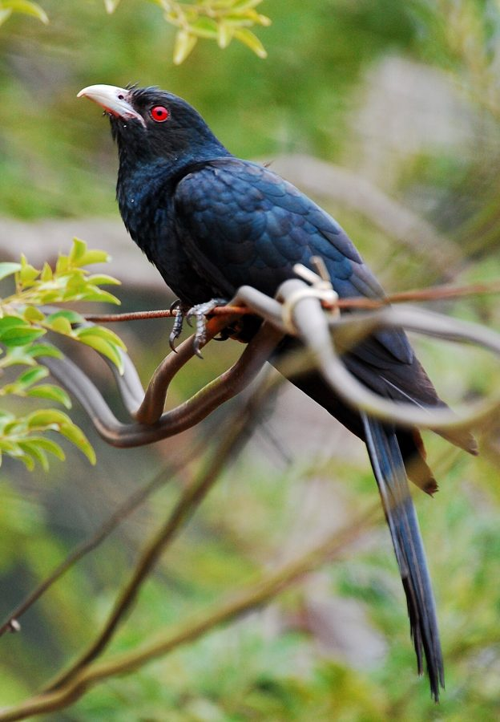

कोयलAsian Koel
Eudynamys scolopaceus · Cuculidae · BRD-0014

- Scientific name
- Eudynamys scolopaceus (Linnaeus, 1758)
- Family
- Cuculidae
- Hindi
- कोयल / कोकिला
- Status here
- native
- IUCN
- LC
When to look कब देखें
Expected mainly in February, March, April, May, June, July, August, September, October.
कोयल / Asian Koel
Eudynamys scolopaceus (Linnaeus, 1758) — Cuculidae
कोयल — भारत की सबसे प्रसिद्ध आवाज़। फरवरी में जब आम के पेड़ों पर बौर आती है, तब कोयल की आवाज़ शुरू होती है — धीरे, और फिर ऊँचे, तेज़ "को-एल, को-एल, को-एल!" यह आम की फसल का संकेत है, गर्मी का संकेत है। पर कोयल खुद कभी घोंसला नहीं बनाती — वह कौए के घोंसले में अंडे देती है, और कौआ बिना जाने उसके बच्चे पालता है।
हिंदी परिचय Hindi Overview
कोयल (Eudynamys scolopaceus) भारत की सबसे प्रसिद्ध आवाज़ है। फरवरी में जब आम के पेड़ों पर बौर आती है, तब कोयल की आवाज़ शुरू होती है — धीरे, और फिर ऊँचे, तेज़ "को-एल, को-एल, को-एल!" यह आम की फसल का संकेत है, गर्मी का संकेत है। पर कोयल खुद कभी घोंसला नहीं बनाती — वह कौए के घोंसले में अंडे देती है, और कौआ बिना जाने उसके बच्चे पालता है। यह प्रकृति का सबसे पुराना और सबसे चालाक जुगाड़ है।
Quick Identification त्वरित पहचान
| Feature | Description |
|---|---|
| Size | Slender, long-tailed cuckoo (39–46 cm total length); larger than a House Crow |
| Male plumage | Entirely glossy jet-black with a bluish-green sheen |
| Female plumage | Heavily spotted and barred with olive-brown and white overall |
| Eye | Bright crimson-red eyes in both sexes, highly diagnostic |
| Bill | Sturdy, pale greenish-grey, slightly downcurved |
| Voice | Loud, rising ko-EEL, ko-EEL calls; rapid bubbling kik-kik-kik alarm call |
Field tip: Look for the bright red eyes to distinguish the glossy black male Koel from a House Crow. Females are brownish and cryptically spotted, which helps them sneak into crow territories to lay eggs.
Morphology आकारिकी
Biometrics (subspecies scolopaceus, northern India — the form in eastern UP):
| Measurement | Range |
|---|---|
| Total length | 390–460 mm |
| Wing (flattened chord) | 195–218 mm |
| Tail | 180–205 mm |
| Tarsus | 32–36 mm |
| Bill (culmen from base) | 28–33 mm |
| Weight | 190–240 g |
Male: Medium-large (39–46 cm including long tail). Entirely glossy blue-black plumage with slight greenish iridescence in good light. Long, graduated tail. Bill pale grey, slightly decurved. Legs grey. Red iris immediately visible.
Female: Strikingly different — brown with heavy cream/white spotting and barring on upperparts; streaked underparts. This extreme sexual dimorphism is an adaptation to brood parasitism — the female must move inconspicuously among crow habitat without alarming host nests.
Juvenile: Resembles female but duller; both sexes show red eye from early age.
Size relative to host: Koel is slightly larger than the House Crow (Corvus splendens). Koel eggs, however, are smaller than crow eggs — a constraint of the parasitism.
Ecological Role पारिस्थितिक भूमिका
Frugivore and seed disperser: The adult koel feeds primarily on:
- Fruits: figs (Ficus spp., including Peepal Ficus religiosa and Banyan Ficus benghalensis), berries, drupes, Lantana berries, Mahua (Madhuca longifolia), and many wild fruits
- Caterpillars (especially hairy/toxic ones that other birds avoid) — unusual for a frugivore
- Occasionally eggs and nestlings of small birds
Fruit seeds pass intact through the digestive tract and are dispersed over wide areas — koels travel far between fruiting trees. This makes them important forest regeneration agents. Studies show Ficus seeds have higher germination success after passing through koel gut.
Obligate brood parasite — House Crow host: The koel is one of India's most-studied brood parasites:
- The female locates active House Crow (Corvus splendens) nests.
- Waits for a moment when crows are distracted (the male koel often creates a decoy disturbance by "attacking" the nest area).
- Lays one egg rapidly (in as little as 4 seconds) and removes one crow egg.
- Koel eggs hatch in ~12 days (faster than crow eggs at ~17–19 days).
- The koel chick does NOT evict crow eggs or chicks (unlike Common Cuckoo) — all hatch and compete.
- The rapidly growing koel chick demands more food; crow parents feed it preferentially.
- Koel fledglings are eventually recognised and expelled by crows, but by then are independent.
Why don't crows recognise the deception? Koel eggs partially mimic crow egg colour (greenish-blue with spots), but the mimicry is imperfect. Crows do sometimes reject eggs. This has driven an evolutionary "arms race" — koel females whose eggs are most crow-like leave more offspring.
Life Cycle / Phenology जीवन चक्र
- February–March: Arrival in eastern UP coinciding with mango flowering; males begin calling at dawn.
- March–May: Peak calling — males call continuously from pre-dawn to noon; females actively parasitising crow nests.
- April–June: Koel eggs hatching in crow nests; chick raised by crow parents.
- July–September: Fledglings independent; adults feeding heavily on monsoon fruits.
- October: Calling stops; adults preparing to move south or to wintering areas.
- November–January: Absent or very quiet in eastern UP.
Migration pattern: Populations in North India (including UP) are migratory — they breed here and move south or to Sri Lanka for winter. Southern Indian populations are year-round residents. The arrival in eastern UP (Feb–Mar) correlates precisely with mango flowering — the phenological connection is strong enough that farmers use koel calling as a phenological calendar marker.
Host Plants or Prey आहार
Primary diet:
- Fruits of Mango (Mangifera indica), Guava, Papaya, and Lantana (Lantana camara)
- Figs of Banyan (Ficus benghalensis) and Peepal (Ficus religiosa)
- Hairy caterpillars and grasshoppers
- Eggs of small passerine birds (occasionally)
Predators / Natural Enemies शत्रु
- House Crow (Corvus splendens) — attacks adult koels near nests; destroys koel eggs if detected
- Shikra (Accipiter badius) — preys on flying adults and fledglings
- Indian Rat Snake (Ptyas mucosa) — climbs to raid nests that contain koel chicks
Agricultural / Human Relevance कृषि एवं मानव उपयोग
Cultural icon — most celebrated bird in Indian literature:
- Koel is the state bird of Jharkhand and one of India's most culturally iconic birds.
- In Sanskrit literature (koel, kokil, kalakanth) — symbol of spring, love, longing, and beauty.
- Kalidasa's Meghaduta uses the koel call as a symbol of separation and yearning.
- Tulsidas, Kabir, Mirabai — all use koel as a poetic symbol.
- The call is universally associated with the mango season and summer afternoons in rural India.
Pest caterpillar consumption: Koels eat hairy caterpillars that most other birds avoid — including forest pest species. This is a minor but real pest-suppression function.
House Crow population indicator: The local abundance of koels is directly linked to House Crow density. Areas with more crow nests support more koels. As crow populations in eastern UP towns have grown with urbanisation, koel numbers have increased proportionately.
Expected Locally स्थानीय रूप से अपेक्षित
Not a field record. Written from published accounts for eastern Uttar Pradesh. No confirmed local sighting yet — if you have seen it, that is what the atlas needs.
अभी तक स्थानीय पुष्टि नहीं। यह विवरण प्रकाशित स्रोतों से है, किसी अवलोकन से नहीं।
Commonly observed and heard in Basti district from late February through October. Males are highly vocal at dawn, calling from dense mango orchards. Broad-scale parasitism of House Crow nests is easily observable in village centers and town suburbs. Birds are rarely seen in open ground, preferring the upper canopy.
Distribution वितरण
Global range: Widespread across South Asia (Pakistan, India, Nepal, Bangladesh, Sri Lanka, Maldives) and Southeast Asia (Myanmar, Thailand, Indochina, southern China, and Indonesia).
In India: Found throughout the plains and hills of the entire country, extending up to about 1,800 m elevation in the outer Himalayas.
In Uttar Pradesh: Common resident in the southern parts, but a prominent summer breeding visitor in northern and eastern UP, present from February to October.
In Basti district / eastern UP: Highly common summer breeding visitor; abundant in all village mango orchards, gardens, and mature tree groves.
Range notes: No significant range changes documented.
Research Questions शोध प्रश्न
- What is the precise arrival date of the first koel call in Basti district each year — and has this date shifted over the past two decades (climate change indicator)?
- What fraction of House Crow nests in Basti town are parasitised by koels in a given season?
- Do koels in eastern UP show host-egg mimicry — are koel eggs found in crow nests visually similar to crow eggs?
- What fruiting trees do koels preferentially use in Basti district during the post-breeding fruit season (July–October)?
- Is the koel absent from Basti district December–January, or do some individuals overwinter — winter survey needed.
Similar Species मिलती-जुलती प्रजातियाँ
| Species | How to distinguish |
|---|---|
| Corvus splendens (House Crow) | Grey nape; heavier bill; different call; no red eye |
| Dicrurus macrocercus (Black Drongo, BRD-0005) | Forked tail; slender; aggressive; red eye absent; different call |
| Copsychus saularis (Oriental Magpie-Robin) | Much smaller; black and white; different habitat |
Taxonomy & Classification वर्गीकरण
Original description. Eudynamys scolopaceus was described by Carl Linnaeus in 1758 as Cuculus scolopaceus in Systema Naturae, 10th Edition, page 111. Type locality: Bengal. It was later transferred to the genus Eudynamys Vigors & Horsfield, 1826.
Subspecies. Five subspecies are currently recognised:
| Subspecies | Authority | Range | Notes |
|---|---|---|---|
| E. s. scolopaceus | (Linnaeus, 1758) | Pakistan, India, Nepal, Bangladesh, Sri Lanka | Nominate form occurring in Uttar Pradesh |
| E. s. chinensis | Cabanis & Heine, 1863 | Southern China, Indochina | Larger; males greener |
| E. s. harterti | Ingram, 1912 | Hainan | Smaller |
| E. s. malayanus | Cabanis & Heine, 1863 | Malay Peninsula, Sumatra, Borneo | Underparts heavily barred |
| E. s. mindanensis | (Cabanis & Heine, 1863) | Philippines | Distinct tail barring |
Family and order placement. Belongs to the order Cuculiformes, family Cuculidae (cuckoos). The family Cuculidae is a diverse group of around 150 species, many of which are brood parasites.
Phylogenetic notes. Genetic research places Eudynamys as a basal clade within the cuckoo subfamily Cuculinae, closely related to the genus Scythrops.
IUCN status rationale. Assessed as Least Concern (LC) by the IUCN Red List. It has an extremely large range and stable population trend, benefiting from the abundance of its primary crow host (Corvus splendens) in human-altered landscapes.
Photo Gallery फ़ोटो गैलरी
Note: Add field photos tomedia/species/asian_koel/
फोटो निर्देश: घने आम के पत्तों में छुपा नर, मादा कौए के घोंसले के पास, और लाल आँखें दिखाता हुआ क्लोज़-अप।
Photos needed आवश्यक फोटो
- [ ] Male close-up showing bright red eye (नर की लाल आँख)
- [ ] Female perched showing barred pattern (धब्बेदार मादा)
- [ ] Feeding on banyan figs (बरगद का फल खाते)
- [ ] Fledgling koel in crow nest (कौए के घोंसले में कोयल का बच्चा)
Atlas Connections संबंधित प्रजातियाँ
- Mango — arrival phenology linked to mango flowering; mango fruit eaten by adults (FLR-0011)
- Peepal — figs are major fruit food; seed dispersal agent for Peepal (FLR-0006)
- Banyan — Banyan figs consumed; important dispersal mutualism (FLR-0010)
- Lantana — Lantana berries consumed; koel inadvertently assists Lantana spread (FLR-0007)
References सन्दर्भ
- Linnaeus, C. (1758). Systema Naturae per regna tria naturae. Editio Decima, Reformata. Laurentii Salvii, Holmiae, p. 111. [original description]
- Ali, S. & Ripley, S.D. (1987). Handbook of the Birds of India and Pakistan. Vol. 3. Oxford University Press, New Delhi.
- Grimmett, R., Inskipp, C. & Inskipp, T. (2011). Birds of the Indian Subcontinent. 2nd ed. Christopher Helm, London.
- Rasmussen, P.C. & Anderton, J.C. (2005). Birds of South Asia: The Ripley Guide. Smithsonian Institution, Washington.
- Liang, W. et al. (2012). Brood parasitism and egg rejection in the Asian Koel. Biological Journal of the Linnean Society, 107, 486–493.
- BirdLife International (2024). Eudynamys scolopaceus. IUCN Red List of Threatened Species. Ver. 2024.
- GBIF Occurrence Data — Eudynamys scolopaceus, Uttar Pradesh (2010–2025).
Source file: species/fauna/birds/asian_koel.md